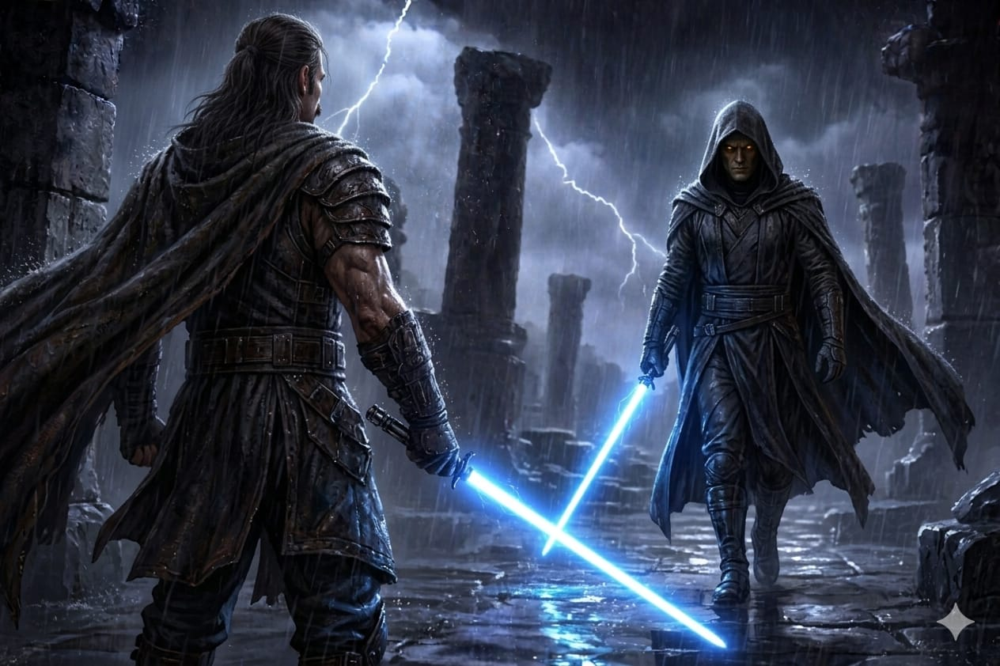

"Na noite em que a Ordem Jedi caiu, não foram os grandes mestres que carregaram a esperança da galáxia... foram crianças tentando sobreviver."
Os Sobreviventes
Honda Civic
O Padawan prodígio de 80 anos, da mesma espécie do Mestre Yoda, que assumiu a linha de frente como escudo para os iniciados.
Zak
O orgulhoso e corajoso Togruta, que encarnou o verdadeiro espírito Jedi ao se sacrificar na linha de frente para salvar os demais.
Lionel
O ágil Padawan humano de 17 anos, lutando para manter o grupo vivo no meio do fogo cruzado.
Theon Belaris
O piloto contrabandista com uma dívida pesada, que caiu de paraquedas na zona de guerra atrás de seu "pagamento".
O Início: A Vigília do Silêncio
A sessão começou com um clima enganosamente sereno na Sala das Mil Fontes. Honda, Zak e Lionel receberam uma missão aparentemente monótona: supervisionar o sono do Clã Narro, um grupo de 11 jovens iniciados entre 5 e 10 anos, na véspera de seus testes para ganharem seus sabres.
Apesar do ambiente pacífico, uma sensação de inquietação já pairava no ar através dos diálogos tensos com a experiente Mestra Taria Vone e Vorian Krell.
A Ruptura: A Marcha da 501ª
A paz foi estilhaçada por um calafrio na Força — milhares de vozes silenciadas instantaneamente pela galáxia. O cheiro de ozônio de blaster e sangue inundou a sala com a marcha inconfundível da 501ª Legião.
A Mestra Taria Vone, já alvejada e gravemente ferida, entregou aos Padawans sua verdadeira provação: não lutem, apenas garantam que o futuro dos Jedi sobreviva.
Ela entregou as coordenadas de um informante no Hangar Sul e de um templo esquecido. Com um último grito de guerra, a velha Mestra se atirou contra a legião de clones, sacrificando-se para comprar os segundos necessários para a fuga do grupo.
A Fuga Pelos Níveis Inferiores
Com a ameaça avassaladora do "Escolhido" cortando os corredores principais, o grupo precisou improvisar pelos andares inferiores banhados em luzes vermelhas de emergência.
O Atalho
Guiados pelo pequeno Kir, um rodiano de 7 anos, Honda usou a Força de forma bruta para quebrar a entrada de um duto de ar atrás de uma cachoeira.
Aliados e Traidores
Nos corredores de serviço, ganharam a ajuda inesperada de Bop, um valente Ewok armado com uma lança.
Logo em seguida, sofreram uma emboscada de Lyra Vane, a professora de estudos da Força, agora corrompida.
Ela quase assassinou a jovem Sira, mas o Wookiee Mestre Gnar-Kell surgiu arrebentando paredes para enfrentar a traidora, permitindo que os Padawans resgatassem a criança com um uso genial e entrosado da Força.
O Piloto e a Divisão do Grupo
Devido ao limite de peso do elevador de carga, Honda assumiu a responsabilidade de subir primeiro com 10 das crianças. Lionel, Zak e Bop ficaram para trás.
O Ponto de Vista de Theon
Contratado 10 horas antes por uma figura encapuzada para um trabalho altamente confidencial, Theon sobrevoava o Templo.
Ao avistar seu "pacote" pelas janelas do prédio em guerra, o piloto invadiu o Templo, mas acabou caindo acidentalmente no poço do elevador de carga.
O Encontro
No andar de baixo, Lionel e Zak lidavam com clones hostis quando as portas do elevador se abriram.
Theon, sem hesitar, disparou seu revólver na testa do clone restante, unindo-se imediatamente ao grupo em direção à sua nave.
O Terror no Mezanino do Hangar
No andar superior, Honda e as 10 crianças saíram diretamente no inferno.
Precisando cruzar uma ponte exposta, o desespero atingiu o ápice quando a caminhada mecânica e implacável de Darth Vader cruzou o caminho deles.
- O pequeno Jax, de 8 anos, foi morto no fogo cruzado.
- Um golpe de sabre destruiu a ponte. Honda e o jovem Zane caíram diretamente aos pés do Sith.
- A morte era certa, e a sensação de asfixia pela aura de Anakin era real.
- Contudo, em uma cena de união e esperança, os iniciados ainda não alinhados com a Força uniram-se e salvaram eles realizando um empurrão da Força no Escolhido.
- No último segundo, o instrutor de combate Mestre Cin Drallig atacou Anakin, dando uma chance brutal de fuga para Honda e Zane.
O Clímax Sangrento no Hangar Principal
A conclusão se deu em uma verdadeira zona de guerra aberta no hangar.
- A nave de Theon, juntamente a Lionel como atirador, chegou providenciando fogo de cobertura pesado com os canhões.
- O pequeno Honda Civic, do alto de seus 50 centímetros, agigantou-se refletindo disparos de uma linha inteira de clones para proteger os 9 iniciados restantes e abater um droide de combate.
- Com a morte dos professores aliados, Zak assumiu sozinho a linha de frente contra dois Cavaleiros Jedi traidores.
- O Togruta lutou com um talento absurdo, comprando tempo suficiente para que o Clã Narro embarcasse, mas foi brutalmente ferido no processo, ficando a um fio da morte.
- Prestes a desmaiar, Zak foi salvo por Vorian Krell, que o arremessou em segurança para a nave.
"A sessão encerrou-se com uma imagem digna de cinema: Vorian executando os dois mestres traidores e virando-se, sabre em punho, para um duelo frente a frente com o Escolhido."

FIM DO EPISÓDIO I